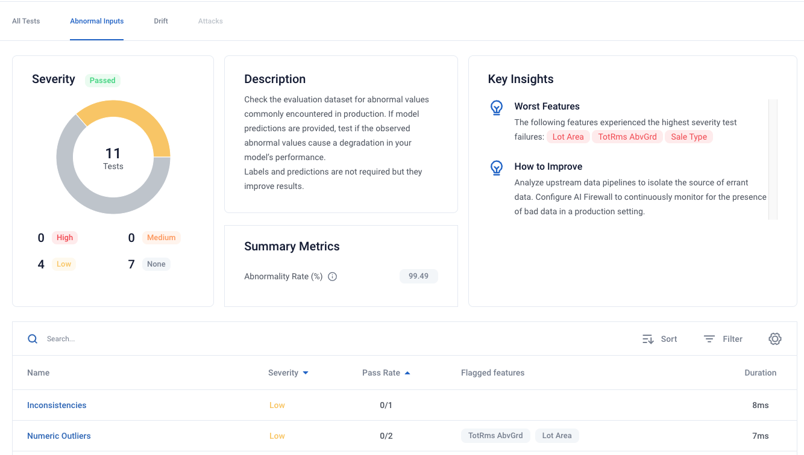

Summary Tests
While individual tests measure a single, specific thing, you can look at them in an aggregate manner in order to get answers to higher level questions. For example, there are many (10+) different tests for drift, all of which measure one component of drift. But at the end of the day, the high level question the Robust Intelligence Platform can answer is: “is there problematic drift present in my data?”
In order to best convey this, the default view of test run results presents these summary tests first. For example, in the below screenshot you can see that the first view you have of the test result page includes five summary tests.

By clicking on a test, you are brought to page specific for that summary test.
Each summary test contains the following attributes:
Description: a description about what the summary test is testing for, and when it runs.
Pass or fail: a binary outcome for that summary test. This is based on the results of the individual tests making up the summary test. This can be viewed in the Summary Test table as well as on each Summary Test page.
Summary metrics: each summary test can track multiple summary metrics. These are metrics that are related to the summary test. These can be viewed on each Summary Test page as well as tracked over time in Continuous Testing.
Key insights: these are insights specific to each summary test. They can relate to both explaining why the summary test status is what it is, as well as providing suggestions on how to improve the result of the summary test.
Please see this page for a list of all tabular summary tests, this page for a list of all NLP/CV summary tests, and this page for a lits of all compliance summary tests.